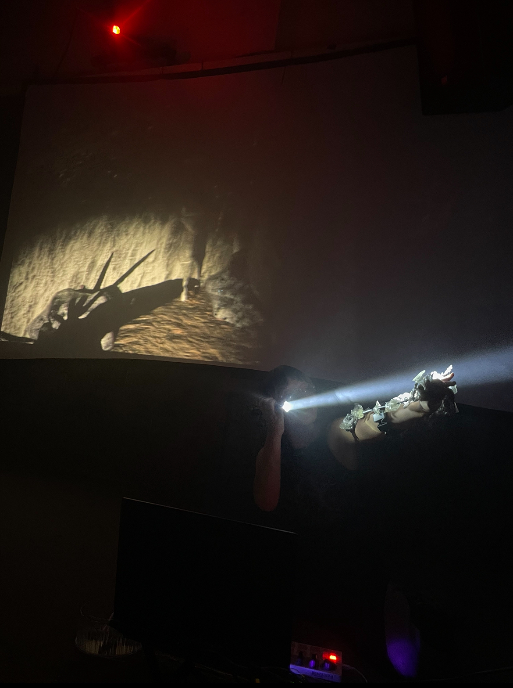
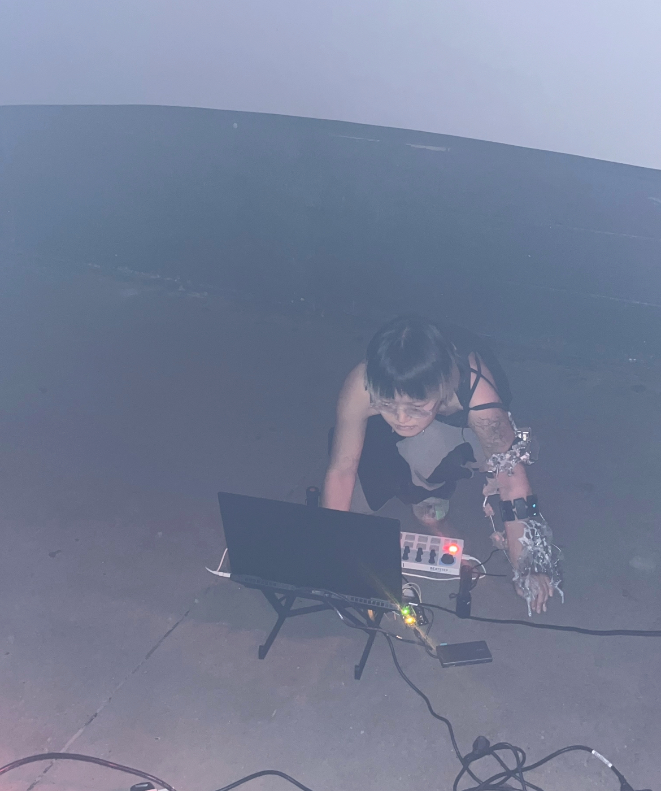
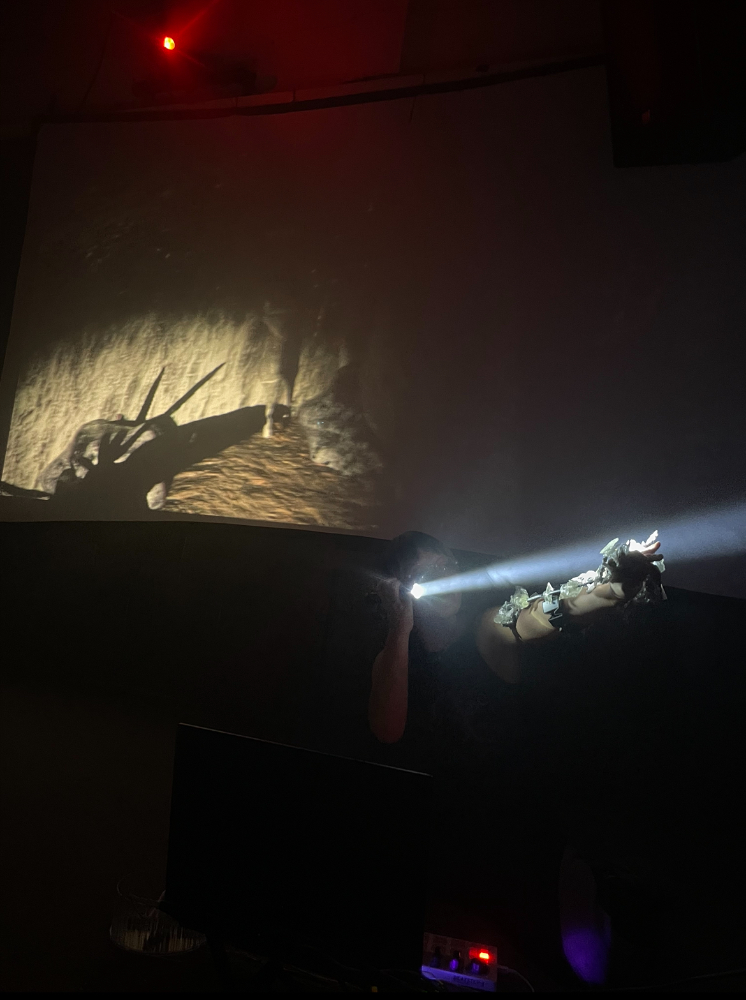
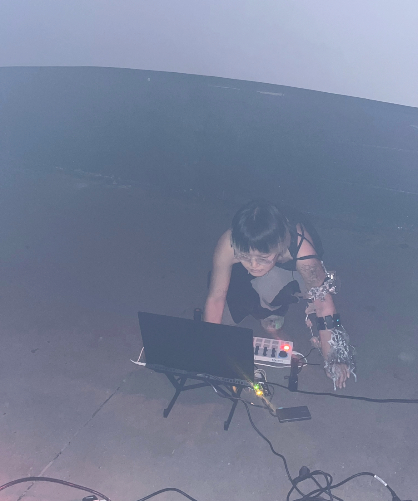

SKIN AND BONES * 3.0
𝒞𝑜𝓃𝓉𝒾𝓃𝓊𝒾𝓃𝑔 𝓅𝑒𝓇𝒻𝑜𝓇𝓂𝒶𝓃𝒸𝑒 𝓈𝑒𝓇𝒾𝑒𝓈
It's a sound performance project that Roise Muhan Yuan @c6r.6rd and song xin plan to carry forward in the future.
Concept:This piece was inspired by a skin condition that Rosie have, which has caused the texture of the skin on parts of the body to change permanently. The altered skin texture reminds her of an armor, merged with the body. By adding fictional body structures with enhanced functions to the body to perform, we created a piece of embodied instrument
that draws its concept closer to Peter-Paul Verbeek’s concept of hybrid intentionality. The instrument, once put on, is something that becomes one with the performer. Through this fusion, a new identity is created, where this bodily instrument the performer, together become a trans-humanistic being. In other words, the concept of the instrument disappears and becomes part of the performer.
Technical:We used the Myo armband to send the muscle EEG signals to a Max patch, which triggers and controls the development of sounds. And also we use bare Myo armband (MyoWare 2.0 Muscle Sensor) to control the different sounds.
Our recent project explores the evolving relationship we have with technology, viewing it not just as a tool—which may seem the most obvious interpretation—but as a medium and sometimes even a collaborator. Technology is embedded in the very fabric of our creative process, shaping it and simultaneously being shaped by it. It plays an essential role, and if one were to take a step back, it becomes clear that technology is integral to every aspect of our journey. We are very aware of this reciprocal relationship and enjoy experimenting with it in our collaborative projects. In this sense, technology frequently becomes one of the core themes we like to explore.
Drawing inspiration from Verbeek’s concept of hybrid intentionality, we were interested in exploring how humans and technology merge. Verbeek argues that humans are never isolated entities but are always directed toward reality, and this relationship is often mediated by technology. If we examine how humans relate to the world through a technological lens, we discover different types of interactions. Hybrid intentionality represents one of these forms—where the human and technological merge. This inspired us to create a kind of technological instrument that could not only be embodied and controlled by the performer but could also merge with the performer to become one. In this way, we aimed for a “Gesamtkunstwerk,” where technology, choreography, movement, and sound are all woven into a unified expression.
In a sense, our work is an exploration of transhumanist ideas, attempting to transcend the boundaries of the human body through technology. By merging the performer with the instrument, we create a new kind of identity—a transhuman entity that blurs the line between human and machine. This transformation lies at the heart of our work, as we strive to extend the capabilities of the human body through technological augmentation.
We see this merging of technology and the human form as a growing phenomenon across various industries—art, music, fashion, gaming, healthcare, and beyond. It’s a trend that we are excited to be a part of, and our project contributes to this exploration by looking at the potential of wearables as both instruments and extensions of the body. In performance, the generated sound evolves through the interaction between the performer and the wearable, creating a dynamic conversation between movement and sound. The performer generates sound through movement, and simultaneously, that sound influences their subsequent actions. We find this interplay between human and technology, sound and visuals, fascinating, and it's something we want to explore more deeply in our future works.
Our approach to choreography is also quite unique, as it evolves naturally alongside the performer learning to play the wearable instrument. Sensors capture the performer’s body data, and rather than a pre-planned dance, the performance unfolds organically in response to the generated sounds. This process blurs the lines between choreography and improvisation, emphasizing the fluid and ever-changing relationship between performer and technology.
In the final iteration of our performance series, we adjusted the interaction between the performer and technology to highlight how real-time audio and visual elements can combine to create new forms of interaction between art and technology.
*Muscle Sensor
*Max MSP
*Unreal engine5
*Arduino
*Zbrush
𝓛𝓤𝓝𝓐_1:𝓠𝓝𝓣𝓜_𝓡𝓐𝓥𝓔
҉̇͊͑17th October 2024
Venue MOT, London
 


